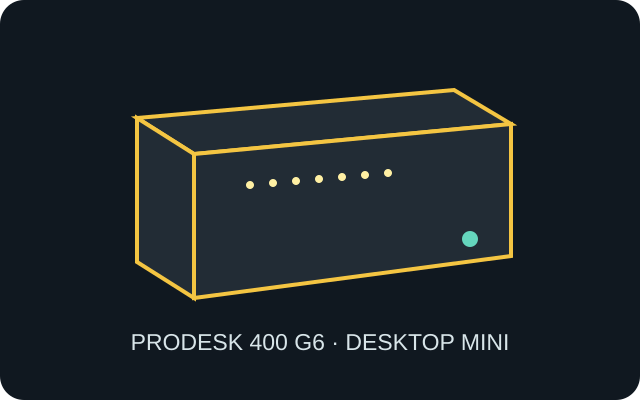

[ IDENTIFIED SYSTEM // HP DESKTOP MINI ]
HP ProDesk 400 G6 Desktop Mini
177 × 175 × 34 mm (W × D × H) Desktop Mini enclosure; product number identifies processor, adapter, Flex I/O and drive configuration.

MODEL TYPE: HP ProDesk 400 G6 Desktop Mini PC; different from its SFF/tower siblings and nearby G5/G7 revisions.
Specifications & fit
| Dimensions / type | 177 × 175 × 34 mm (W × D × H), HP Desktop Mini system enclosure. |
|---|---|
| Board / power | Proprietary HP system board with external HP 65 W adapter for the supported configuration. No ATX PSU or standard motherboard mounting pattern. |
| Drive bays | One 2.5-inch SATA bay plus M.2 storage and WLAN positions; 2.5-inch height, cage and cable must match the installed assembly. |
| Expansion | No full-size PCIe expansion slot. M.2 sockets provide storage/WLAN; rear Flex I/O is a model-specific port module. |
| Thermal / maintenance compatibility | Small blower and heatsink depend on CPU configuration; keep intakes and rear exhaust open. Disconnect external supply before opening and follow the service guide’s drive/fan removal order. |
Compatibility & preservation notes
This Mini uses HP’s own board, power adapter and component carrier. Confirm product number and spare part IDs before borrowing components from other ProDesk or EliteDesk revisions.
- Preserve the 2.5-inch bracket, SATA harness, WLAN antennas and optional Flex I/O module with this exact unit.
- Do not rely on case-family branding alone for board or fan compatibility; verify labels and service-part list.
Manufacturer specifications & service sources
- HP Support — ProDesk 400 G6 Desktop Mini manualsManufacturer manual repository for maintenance and configuration details.
- HP — ProDesk 400 G6 Desktop Mini QuickSpecsManufacturer summary of physical dimensions, configuration options and expansion.